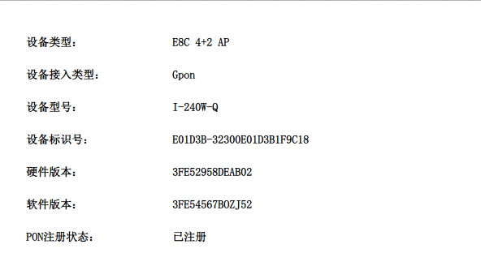
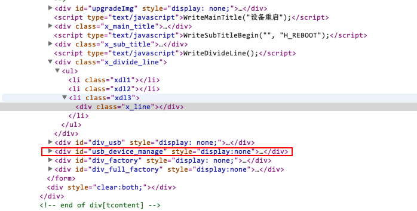
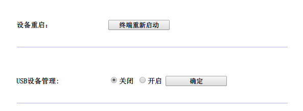
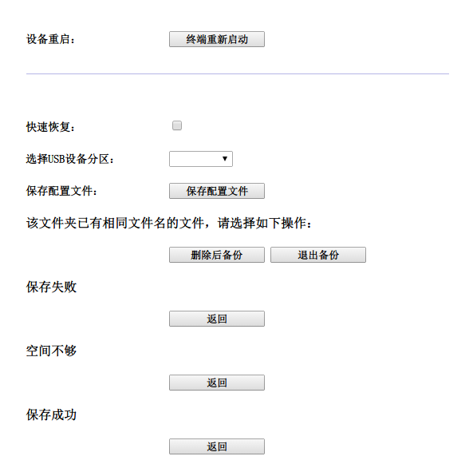
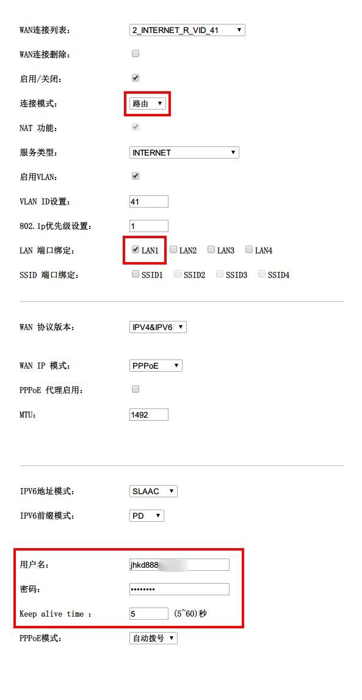
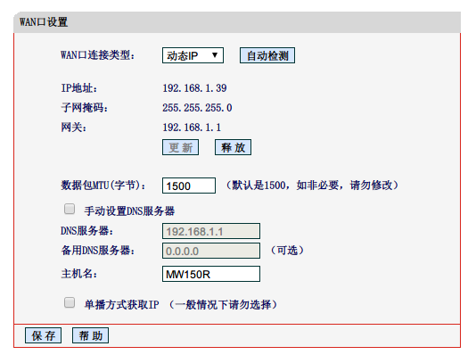
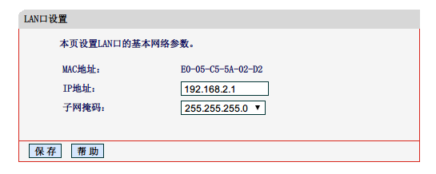

电信路由器上海贝尔E8C GPON HGW（I-240W-Q）-获取超级帐号密码-破解wifi无线上网-二级路由¶
2015-03-04 20:34:00
家里装了12M的光纤，换了一个上海贝尔的I-240W-Q的带无线的电信猫，工作人员只是开启了端口，可以拨号上网，无线能开启但是无法上网。
设备信息：¶
¶
找了网上一些教程一些已经失效，原因无非有以下几种：
- 今年出的电信贝尔路由器出厂时telnet端口已不再是23;
- 超级帐号： telecomadmin 密码：nE7jA%5m 已被电信屏蔽;
MIUI论坛的这篇教程值得一读，电信超级账号密码破解教程独家奉献
一.下面获取超级帐号密码个人总结：¶
1.在浏览器中打开 http://192.168.1.1 2.输入用户帐号： useradmin 密码：** （注：用户密码和帐号在电信猫的背面） 3.先点管理 => 设备管理 => 在设备重启底部那根线上点鼠标右键 => 选择审查元素 => 出现如下图

=> 右键<div id="usb_device_manage" style="display:none;"> => EditasHTML将none;改成block; => 网页出现USB设备管理

=> 开启确定 => 猫插上U盘 (FT32分区) 稍等片刻 等USB的灯亮 => 找到<div id="div_usb" style="display: none;">修改为<div id="div_usb" style="display: block;"> => 出现如下图

=> 选择USB设备分区：的方框后就是黑色小三角形后点鼠标右键 选择 查看元素 => 在<li class="x_form_input">下的<select id="usb_partition" name="usb_partition" style="width:80px"> </select>节点中间添加<option value="usb1_1">usb1_1</option>即<select id="usb_partition" name="usb_partition" style="width:80px"> <option value="usb1_1">usb1_1</option> </select> => 改完后回到页面 点击 保存配置文件 => 将U盘插到电脑上 在U盘的“e8c_Config_Backup”目录里 有个 ctce8_rg.cfg 文件 => 选择用RAR软件打开 里面有个文件再用记事本打开 => 用搜索功能搜索“telecomadmin”当你搜到 <Password>telecomadmin????????</Password>这个就是猫的超级密码 其中?为数字
二.破解Wifi无线上网¶
- 用获取的超级帐号密码登录
- 点击网络 INTERNET连接 WAN连接列表 选择2带INTERNET的连接项 => 连接模式 桥接改路由 => 选择LAN端口绑定（我只绑定端口1其他端口也是生效的）=> 填写拨号的用户名和密码 Keep alive time 填5就可以 至此Wifi连接就可以上网，连接电脑就无需拨号了。 具体如下图：

三.二级路由¶
我想把LAN口连出的网线再连一个路由器，怎么办呢？
- 先连接二级路由器 http://192.168.1.1 登录（用户名密码一般为admin/admin）
- 网络参数-WAN口设置改为动态IP，如下图，当然到目前为止是获取不到IP的

3.网络参数-LAN口设置 将IP设置为192.168.2.1（第三位不一定为2，只要不为1，为1就与一级路由冲突）

4.设置路由器的SSID和密码，至此二级路由就连接完成。192.168.1.1为一级路由器地址；192.168.2.1为二级路由器地址。